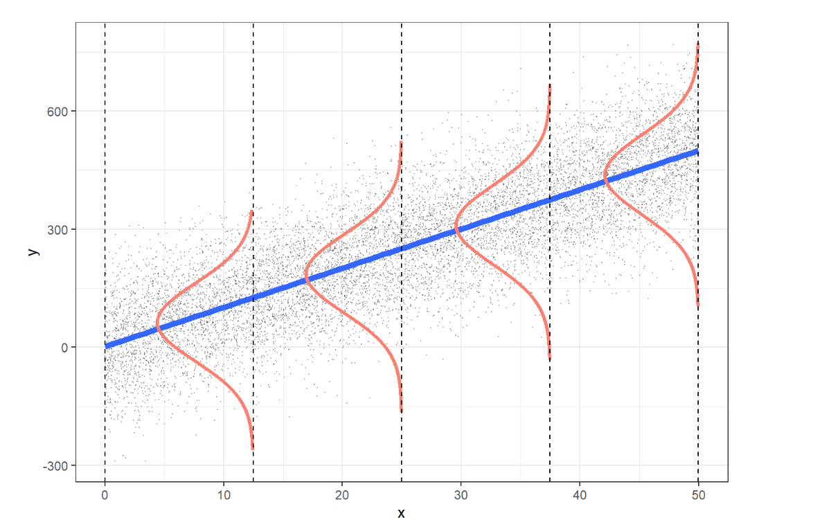

# Instal and load packages
#install.packages(pacman)
pacman::p_load(tidyverse, broom)
# Load Data
df <- NHANES::NHANES
df <- df |>
filter(Age >= 18)
# Set "White" as the reference category directly using factor()
df <- df |>
mutate(Race1 = factor(Race1, levels = c("White", "Black", "Mexican", "Hispanic", "Other")))
# Clean names
df <- df |>
janitor::clean_names()9 Inferential Statistics: Regression Analysis
Regression analysis is a powerful statistical method used to examine the relationship between two or more variables. The goal of regression is to understand how the dependent variable (also called the outcome or response variable) changes when one or more independent variables (also known as predictors or explanatory variables) are varied This method is widely used in various fields such as economics, healthcare, social sciences, and engineering to make predictions, identify trends, and uncover relationships between variables.
There are various types of regression, each suited to different types of data and research questions. Some common types include:
Linear Regression: This examines the relationship between one independent variable and one or more dependent variables, assuming a linear relationship between them.
Logistic Regression: Used when the dependent variable is categorical, typically binary (e.g., success/failure). It models the probability of the outcome occurring.
Generalized Linear Models (GLM): These extend linear regression to handle various types of dependent variables, including count data and proportions, using different link functions. Both linear regression and logistic regression are actually special cases of GLMs. Linear regression uses an identity link function for continuous outcomes, while logistic regression uses a logit link function for binary outcomes. This flexibility makes GLMs a versatile tool for modeling a wide range of data types.
Generalized Mixed Models (GLMM): A more advanced approach that handles both fixed and random effects, useful for dealing with hierarchical or clustered data, and when the data structure involves more complex relationships.
In this session, we will focus on two important types of regression: linear regression and logistic regression, and demonstrate how to perform them in R.
9.1 Simple Linear Regression (SLR)
Simple Linear regression (SLR) is one of the most widely used statistical methods for modeling the relationship between a dependent variable and one independent variable. However, to ensure the model’s accuracy and validity, several assumptions must be met.
9.1.1 Assumptions of Simple Linear Regression
The acronym LINE helps us remember the key assumptions needed for making inferences and predictions with models based on linear least squares regression (LLSR).
In the case of simple linear regression with a single predictor \(X\), the assumptions are as follows:
L (Linear relationship): The mean of the response variable \(Y\) is linearly related to the predictor variable \(X\).
I (Independence of errors): The errors (or residuals) are independent, meaning that the distance between any two points from the regression line is unrelated.
N (Normal distribution): For each value of \(X\), the response \(Y\) is normally distributed.
E (Equal variance): The variance (or standard deviation) of the responses is constant for all values of \(X\).
These assumptions can be illustrated visually:

L: The expected value of \(Y\) at each \(X\) lies along the regression line.
I: We should verify that the design of the study ensures the errors are independent.
N: The values of \(Y\) are normally distributed at each level of \(X\).
E: The spread of \(Y\) is consistent across all levels of \(X\).
9.1.2 The SLR Model
In SLR, the goal is to model the relationship between a dependent variable (response) and an independent variable (predictor). The model predicts the dependent variable based on the independent variable, helping us understand how changes in one variable impact the other.
The general form of a simple linear regression model is:
\[Y = \beta_0 + \beta_1 X + \epsilon\]
Where:
\(Y\) is the dependent variable (the outcome we are predicting).
\(X\) is the independent variable (the predictor).
\(\beta_0\) is the intercept (the expected value of \(Y\) when \(X=0\)).
\(\beta_1\) is the slope (the change in \(Y\) for each unit increase in \(X\)).
\(\epsilon\) is the error term, representing the variability in \(Y\) not explained by \(X\).
9.1.3 Interpreting the Model
Intercept (\(\beta_0\)): The intercept tells us the expected value of the dependent variable when the independent variable is zero. However, in some cases, like the relationship between height and weight, interpreting the intercept might not make practical sense (e.g., predicting weight when height is zero).
Slope (\(\beta_1\)): The slope indicates the change in the dependent variable for a one-unit change in the independent variable. For example, if we are looking at the relationship between height and weight, the slope tells us how much weight is expected to increase (or decrease) for every unit increase in height.
Error term (\(\epsilon\)): The error term captures the variation in the dependent variable that is not explained by the independent variable. In practice, our model won’t perfectly predict every observation, and this error term accounts for the difference between observed values and the values predicted by the model.
9.2 Simple Linear Regression (SLR) Using R
If the assumptions of simple linear regression are met, we can proceed with fitting the model to the data. In this section, we will explore how to perform simple linear regression using R. This method allows us to examine the relationship between a dependent variable (response) and an independent variable (predictor) and make predictions based on the data.
9.2.1 Simple Linear Regression with a Numeric Independent Variable
When dealing with a numeric independent variable, simple linear regression helps us understand how changes in the independent variable affect the dependent variable. In R, we can easily fit and evaluate this relationship using the lm() function.
Here’s an example of performing simple linear regression when the independent variable is numeric:
Research Question
Using the NHANES dataset, our research question is:
In adults, is there a relationship between height (independent variable) and weight (dependent variable)?
Data Wrangling
Before we perform the Simple Linear Regression, we need to load and clean the NHANES dataset.
SLR Model
Now, we build the linear regression model to examine the relationship between height and weight in adults.
model <- lm(weight ~ height, data = df)
summary(model)
Call:
lm(formula = weight ~ height, data = df)
Residuals:
Min 1Q Median 3Q Max
-41.329 -13.299 -2.887 9.673 149.022
Coefficients:
Estimate Std. Error t value Pr(>|t|)
(Intercept) -78.06686 3.69698 -21.12 <2e-16 ***
height 0.94804 0.02186 43.38 <2e-16 ***
---
Signif. codes: 0 '***' 0.001 '**' 0.01 '*' 0.05 '.' 0.1 ' ' 1
Residual standard error: 19.01 on 7412 degrees of freedom
(67 observations deleted due to missingness)
Multiple R-squared: 0.2025, Adjusted R-squared: 0.2024
F-statistic: 1882 on 1 and 7412 DF, p-value: < 2.2e-16tidy(model)# A tibble: 2 × 5
term estimate std.error statistic p.value
<chr> <dbl> <dbl> <dbl> <dbl>
1 (Intercept) -78.1 3.70 -21.1 3.66e-96
2 height 0.948 0.0219 43.4 0 The
lm()function fits a simple linear regression model, andsummary()provides detailed results including the regression coefficients, \(R^2\), and p-values.The
tidy()function from thebroompackage organizes the model output in a tidy format.
SLR Model Interpretation
The Simple Linear Regression (SLR) model fits the relationship between height and weight in the adult population from the NHANES dataset. Below is a breakdown of the model output:
Model Equation
The model equation based on the output can be written as:
\[\hat{y} = -78.07 + 0.95 \times \text{Height}\]
Where:
\(\hat{y}\) is the predicted weight (in kg)
The intercept (-78.07) represents the predicted weight when height is zero, which doesn’t have a practical interpretation in this context but is mathematically part of the model.
The slope (0.95) indicates that for each additional unit of height (in cm), the weight is expected to increase by approximately 0.95 kg, on average.
Coefficients
Intercept (-78.07): The negative intercept is not practically meaningful since height cannot be zero in adults, but it is part of the linear equation.
Height (0.95): The slope suggests that for every additional centimeter in height, weight increases by about 0.95 kg on average. The very small p-value (\(<2e^-16\)) indicates that the effect of height on weight is highly statistically significant.
Residuals
The residuals show the differences between the observed and predicted values of weight:
The minimum residual is -41.33, and the maximum is 149.02, indicating some large deviations.
The median residual is -2.89, suggesting that most predictions are close to the observed values.
Goodness of Fit
R-squared (0.2025) Approximately 20.25% of the variance in weight is explained by height, which suggests that while height has a significant impact on weight, other factors also influence weight substantially.
Adjusted R-squared (0.2024) Very close to the R-squared, confirming the model is reliable for this data.
Model Significance
The F-statistic (1882) and its corresponding p-value (<2.2e−16) indicate that the model is highly significant, meaning height is a useful predictor for weight in this dataset.
The interpretation shows that height has a positive and significant relationship with weight, but the relatively low \(R^2\) value suggests that other factors besides height influence weight.
9.2.2 Simple Linear Regression with a Categorical Independent Variable
When dealing with a categorical independent variable, simple linear regression can be used to analyze how the different categories influence the dependent variable. In this case, we’ll explore the relationship between height and race in adults using the NHANES dataset.
Research Question
Is there an association between race and weight in adult individuals from the NHANES dataset?
SLR Model
In this analysis, we treat race as a categorical variable and examine its relationship with weight The regression equation for a categorical independent variable will include dummy coding (where one category is taken as the reference).
Here’s how you can perform the simple linear regression with a categorical variable in R:
# SLR Model with Categorical Independent Variable
model_cat <- lm(weight ~ race1, data = df)
summary(model_cat)
Call:
lm(formula = weight ~ race1, data = df)
Residuals:
Min 1Q Median 3Q Max
-48.787 -15.028 -2.828 11.872 142.813
Coefficients:
Estimate Std. Error t value Pr(>|t|)
(Intercept) 82.5284 0.2992 275.794 < 2e-16 ***
race1Black 5.3582 0.7803 6.867 7.11e-12 ***
race1Mexican -1.9117 0.8863 -2.157 0.031 *
race1Hispanic -4.2676 1.0616 -4.020 5.88e-05 ***
race1Other -9.4982 0.9286 -10.229 < 2e-16 ***
---
Signif. codes: 0 '***' 0.001 '**' 0.01 '*' 0.05 '.' 0.1 ' ' 1
Residual standard error: 21.02 on 7415 degrees of freedom
(61 observations deleted due to missingness)
Multiple R-squared: 0.02501, Adjusted R-squared: 0.02448
F-statistic: 47.55 on 4 and 7415 DF, p-value: < 2.2e-16# Tidying the output for better interpretation
tidy(model_cat)# A tibble: 5 × 5
term estimate std.error statistic p.value
<chr> <dbl> <dbl> <dbl> <dbl>
1 (Intercept) 82.5 0.299 276. 0
2 race1Black 5.36 0.780 6.87 7.11e-12
3 race1Mexican -1.91 0.886 -2.16 3.10e- 2
4 race1Hispanic -4.27 1.06 -4.02 5.88e- 5
5 race1Other -9.50 0.929 -10.2 2.14e-24SLR Model Interpretation
:::{style=“text-align:justify”}
The Simple Linear Regression (SLR) model fits the relationship between race and weight in the adult population from the NHANES dataset. Below is a breakdown of the model output:
Model Equation
The model equation based on the output can be written as:
\[\hat{y} = 82.53 + 5.36 \times \text{(Black)} - 1.91 \times \text{(Mexican)} - 4.27 \times \text{(Hispanic)} - 9.50 \times \text{(Other)}\]
Coefficients
Intercept: The estimated average weight for individuals in the reference category (White) is 82.53 units.
race1Black: Black individuals have an average weight that is 5.36 units heavier than the reference category (White).race1Mexican: Mexican individuals weigh, on average, 1.91 units less than the reference category (White).race1Hispanic: Hispanic individuals have an average weight that is 4.27 units less than the reference category (White).race1Other: Individuals in the Other category weigh, on average, 9.50 units less than the reference category (White).
Residuals
Residuals indicate the differences between observed and predicted weights. They range from a minimum of -48.79 to a maximum of 142.81, showing variability in model predictions.
Goodness of Fit
Residual standard error: 21.02, indicating the average distance between observed and predicted values.
Multiple R-squared: 0.02501, meaning that approximately 2.5% of the variability in weight is explained by race.
Adjusted R-squared: 0.02448, which adjusts for the number of predictors in the model.
Model Significance
The F-statistic is 47.55 with a p-value of < 2.2e-16, indicating that the model is statistically significant and at least one of the race categories significantly predicts weight.